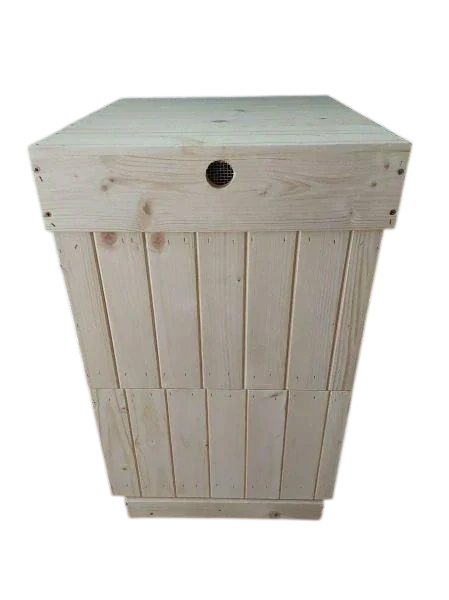
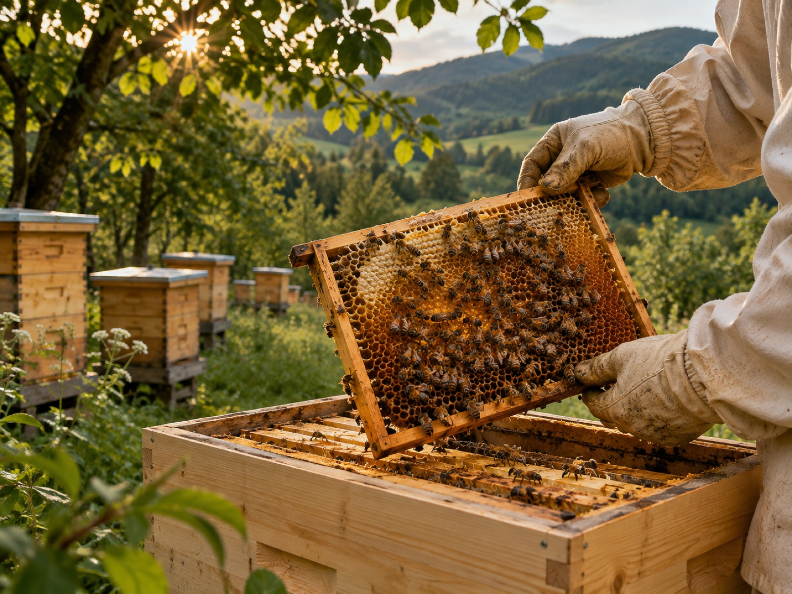
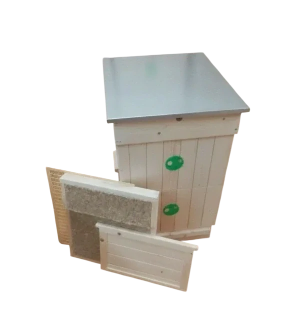
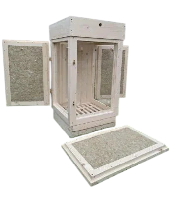
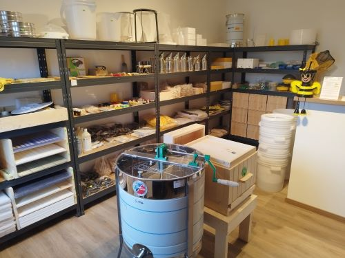

Vlastná výroba · Včelie úle
Zateplený drevený včelí úľ
109,00 € s DPH
PRE VČELÁROV. OD VČELÁROV.
Úle z vlastnej výroby, všetko pre vaše včely a malé radosti, ktoré voňajú prírodou.

VŠETKO MÁ SVOJE MIESTO
Či už včelárite, tvoríte alebo hľadáte
kúsok prírody. Ste tu správne.

Včelie úle, rámiky a diely

Včelárske potreby a vybavenie

Med, včelie produkty a darčeky
VYBRALI SME PRE VÁS

Vlastná výroba · Včelie úle
Pomôcky · Práca pri úli
Včelie produkty · Med od včelára

Hry a hračky · Svet včiel

Z DREVA. S CITOM PRE VČELY.
Každý včelár má svoj spôsob. Preto u nás nájdete klasické úle, ležany aj presklené zostavy, ktoré vás pustia bližšie do sveta včiel.
Objaviť naše úleNeviete, ktorý vybrať? Poradíme vám.
SME VČELÁRSTVO TRIZULIAK
Za naším obchodom stojí včelárska rodina. Vzťah k včelám si odovzdávame z generácie na generáciu a radi sa oň podelíme aj s vami.
U nás má miesto prvý včelí úľ aj roky skúseností. Zastavte sa po vybavenie, dobrú radu alebo len objaviť niečo nové zo sveta včiel.
Spoznajte nás osobne
Naša predajňa v Gbeľanoch pri ŽilineZO ŽIVOTA VČIEL
ZASTAVTE SA U NÁS
Ferdinanda Majlátha 507/1
013 02 Gbeľany pri Žiline
SME TU PRE VÁS
+421 919 037 687Telefonická podpora: pondelok – piatok, 8:00 – 16:00vcelarstvotrizuliak@centrum.skZačnite rámikovou mierou a spôsobom včelárenia. Radi vám pomôžeme vybrať zostavu aj príslušenstvo. Zavolajte nám alebo sa zastavte v predajni.
Po celom Slovensku pri nákupe nad 300 €. Regionálny dovoz do 20 km od predajne pri nákupe od 150 €. Pozrite si podmienky platby a dopravy.